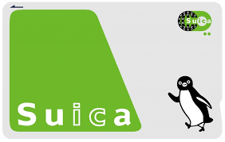
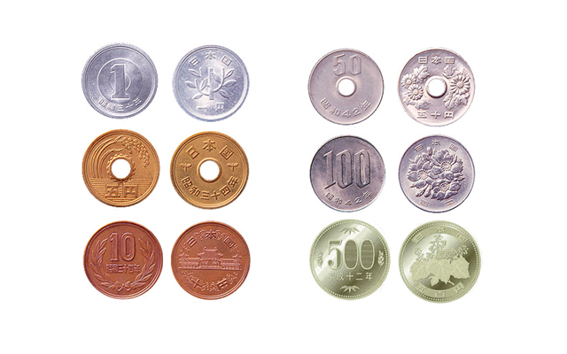
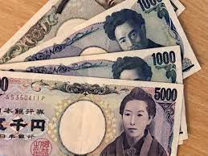

Preparation
This section will be on preparation for your trip to Tokyo handling some of the logistics before getting into the country. To being:
- Tokyo Metro Pass - Not a JRail Pass
- Cash to exchange at airport
- Appropriate attire for Japan
- Journal for documenting your stay
Tokyo Metro Pass
If you're like me you thought you would need a JRail Pass to get around everywhere in Japan, but in Tokyo you need something called a Tokyo Metro Pass can be in the form of a Suica or Pasmo card. Below is an image of a Sucia Card, if you click on that image you will visit a website that can explain where and how to get a Suica card as well as give you more details and answer more questions. Also the Suica card is refillable so if you need to add more Yen you can at the stations in the metro right next to the gate. 
Cash to exchange at airport
Card is mostly accepted in Japan depending on the provider, but a lot of restraunts dont take card because of surcharges, so they are cash only. Below are images of the coin and cash version of Yen. Be sure to exchange your currency to Yen before leaving the airport you will need it to get your Suica Card for transportation.  
Appropriate attire for Japan
Japan has very specific cultural norms that other countries dont, and as a part of this journey your goal is not to stand out from locals as much as possible. So we will need to bring more modest clothing like jeans and t-shirts to fit in to the cultural norms. Shorts can be acceptable for men but it is generally a good idea to not show anything above the knee. As well as shoulders should be covered.
Journal for documenting your stay
You will want to remember this journey for the rest of your life and we as humans forget a lot of things very quickly, so if you bring a journal and simply write down the date, places you visited, things you ate, etc. you will always be able to remember this trip and what you learned about yourself from this experience.Next up is your schedule in Tokyo! click here to head to the next page!